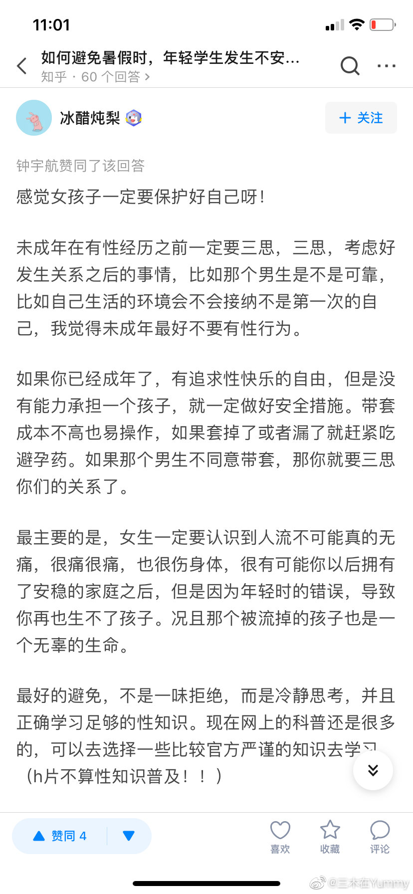

我也是这么教育闺女的：不带套不做，抱怨滚蛋。//@三木在Yummy:我赞同//@Floria喵:俺想说，“不管你和一个男人相处多久，他对你多好，不戴套，立马分手”这个做起来不是许多人想象得那么简单。社会关于减少意外妊娠的期望全部指向“女孩子们果决一点”这是根本不现实的@三木在Yummy:#青柠行动##别让暑假变成流产假#SHELOVYUMMY“女生一定要认识到人流不可能真的无痛，很痛很痛，也很伤身体，很有可能你以后拥有了安稳的家庭之后，但是因为年轻时的错误，导致你再也生不了孩子。” 